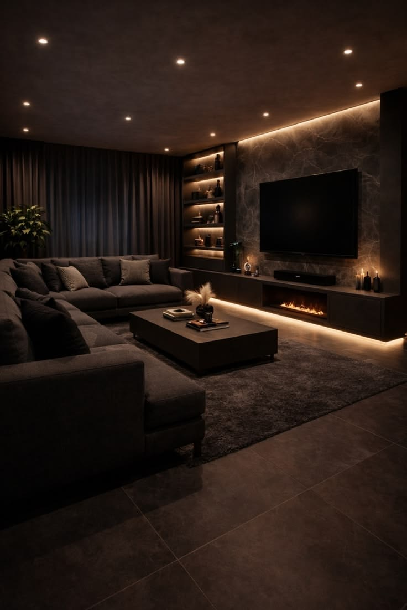
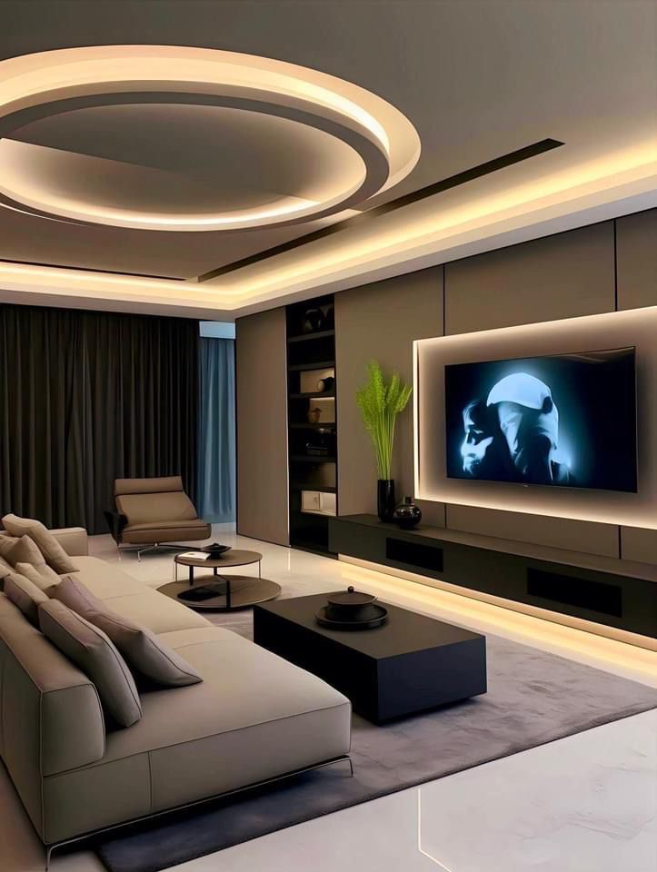
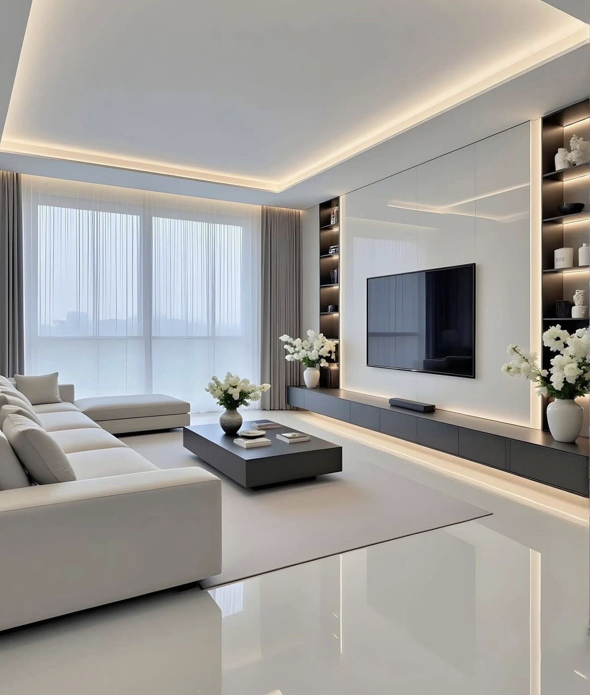
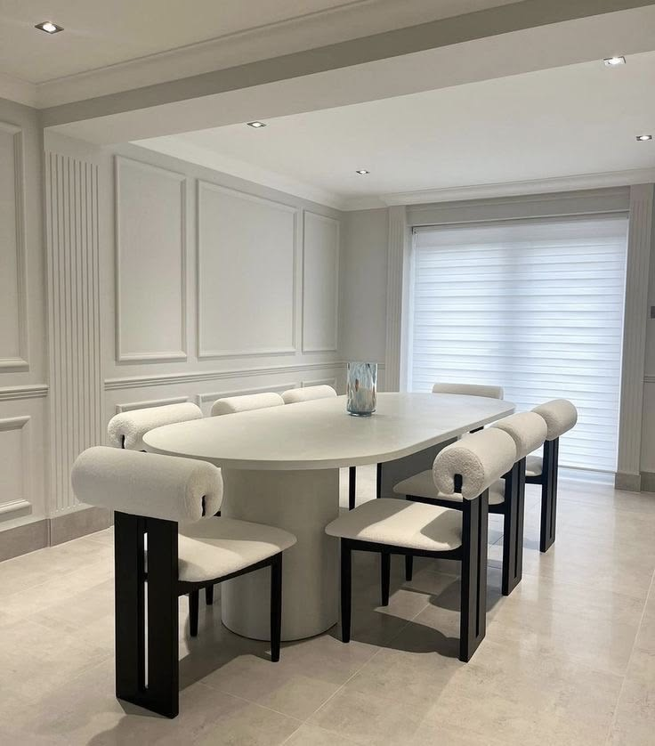
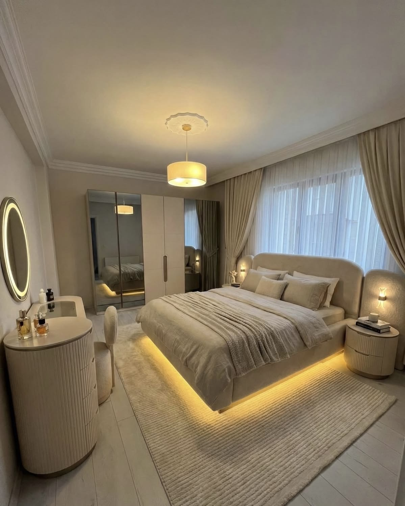
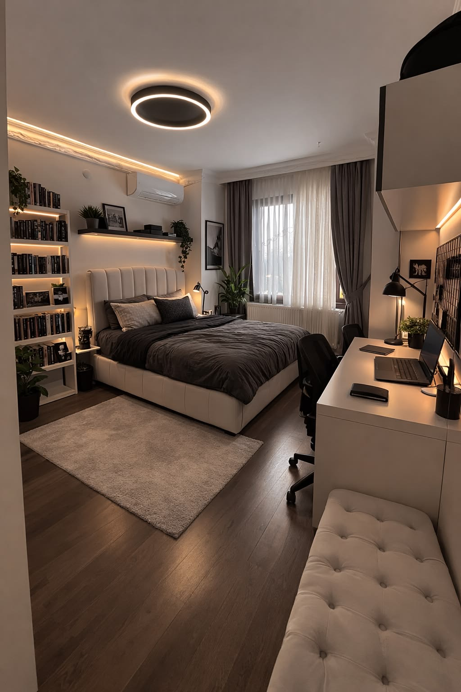
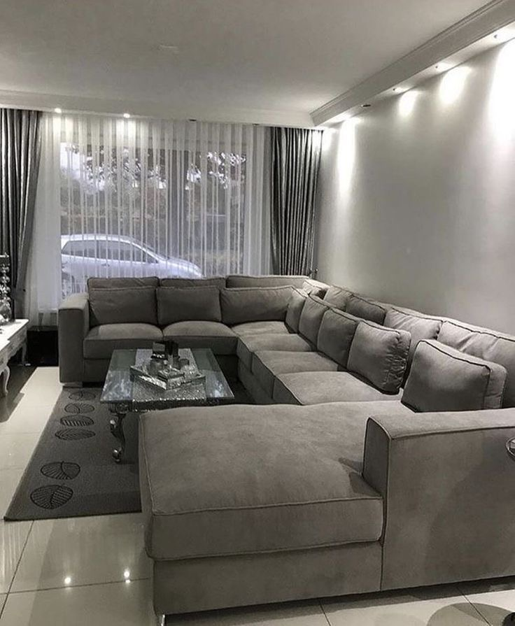

Muhiimadda Furniture-ka Guriga
La asaasay: April 24, 2026
Furniture-ka guriga ma aha oo kaliya
wax lagu fadhiisto ama lagu nasto, balse
waa qayb muhiim ah oo ka mid
ah
nolosha maalinlaha ah. Sida aad u doorato
alaabta guriga waxay saameyn ku yeelan
kartaa raaxadaada
quruxda gurigaaga, iyo xitaa niyaddaada.
Guriga si wanaagsan loo habeeyey wuxuu
abuuraa jawi deggan oo qofka ku
dhiirrigeliya inuu waqtigiisa si fiican
u isticmaalo. Sidaas darteed, waxaa muhiim
ah in aad si taxaddar leh u doorato
kursiyada miisaska
sariiraha iyo alaabaha kale.
Qurxinta Qolka Fadhiga



Qolka fadhiga waa meesha ugu badan ee la
isticmaalo guriga Waa halka aad ku qaabilo martida
ku nasato ama aad ku daawato TV Si aad u
hesho qol fadhiga oo qurux badan
- Dooro kursi weyn oo raaxo leh oo ku habboon qoyskaaga
- Isku dar midabyo fudud oo iswaafaqsan
- Ku dar barkimooyin iyo roog qurux badan
- Isticmaal nalal iftiin diirran leh
- Ku dar sawirro ama qurxin darbiga lagu dhejiyo
Sida Loo Doorto Miisaska Saxda ah

Miiska waa mid ka mid ah alaabta ugu
muhiimsan ee guriga Waxaa loo
isticmaalaa cunno
shaqo, ama qurxin. Marka aad
dooranayso miis
- Dooro cabbir ku habboon booska aad haysato
- Hubi in uu ka samaysan yahay walxo tayo leh
- Dooro naqshad ku habboon style-ka gurigaaga
- Ka fiirso midabka iyo sida uu ula jaanqaadayo alaabta kale
Miis wanaagsan wuxuu kordhiyaa shaqeynta iyo quruxda gurigaaga
Doorashada Sariirta Saxda ah



Sariirta waa meesha aad ku nasato
habeenkii, sidaas darteed waa muhiim in ay
noqoto mid raaxo leh
Doorashada sariirta saxda ah
waxay saameyn weyn ku leedahay
caafimaadkaagaiyo hurdadaada
- Dooro joodari (mattress) tayo sare leh
- Hubi cabbirka sariirta (single, double, iwm)
- Dooro naqshad fudud oo qurux badan
- Ka fiirso qalabka laga sameeyay (qoryy, bir, iwm)
Hurdada wanaagsan waxay bilaabataa sariir wanaagsan
Furniture Casri ah vs Mid Dhaqame
Dad badan waxay isku dayaainay doortaan inta u dhaxaysa furniturecasri ah iyo mid dhaqameed. Labaduba waxay leeyihiin faa’iidooyin:
Furniture casri ah: wuxuu leeyahay
naqshad fudud, midabyo yar, iyo qaab
minimal ah
Furniture dhaqameed wuxuu leeyahay naqshad
faahfaahsan, qoryo culus, iyo muuqaal
classic ah
Doorashada ugu fiican waxay ku xiran tahay dhadhankaaga iyo qaabka gurigaaga
instagram
Tiktok
joing whatsApp
facebook